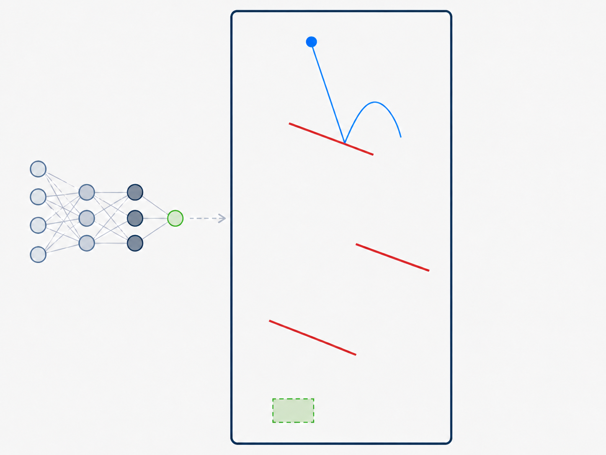

|
Emily Stewart
I recently graduated with a Master’s in Data Science from Harvard University’s John A. Paulson School of Engineering and Applied Sciences. For my thesis, advised by Kianté Brantley and Mohit Bansal, I developed interactive evaluation environments for studying behavioral consistency and social reasoning in language model agents.
In my first year, I worked with Felix Sosa in the Computational Cognitive Neuroscience Lab, led by Samuel Gershman, where I helped build neurosymbolic models of intuitive physics.
Before Harvard, I earned my bachelor’s degree in Cognitive Neuroscience from Washington University in St. Louis. I then spent three years at the Syndemics Lab at Boston Medical Center, including two years as a research data analyst, where I led simulation modeling projects evaluating the cost-effectiveness and public health impact of interventions related to the opioid epidemic.
In my free time, I enjoy running, lifting, baking, and reading. I’m currently training for my first Ironman 70.3 in September! You can check out what I'm reading here.
Email /
CV /
Scholar /
Github
|
|
Current Interests
I’m broadly interested in how language shapes human cognition, belief formation, and behavior. Much of my recent work has focused on language model agents, theory of mind, and the question of how AI systems can reason about people through conversation. I’m especially interested in how AI tools can be used to support human goals, decision-making, learning, and behavior change, while also being clear-eyed about their limitations.
I'm also interested in analytical work that turns messy data into evidence. I enjoy collecting, scraping, cleaning, and modeling data to understand the stories it can tell. I'm particularly drawn to work that uses data science, machine learning, and simulation modeling to identify inequities, evaluate interventions, and support decisions that improve people's lives, especially in areas like public health, education, food access, and gender equity.
|
|
|
Can Your LLM Play the Part? Evaluating Language Agent Alignment to Complex Behavioral Personas in Conversational Environments
Master’s thesis, Harvard SEAS
I developed a framework for evaluating whether persona-conditioned language model agents express assigned behavioral profiles in multi-turn dialogue. The project combines psychologically grounded persona construction, interactive conversation environments, human-calibrated LLM judges, and trained open-weight evaluators to measure when models express, contradict, or fail to surface assigned behavioral signals.
Thesis PDF
Manuscript in preparation. Code release in progress.
|
|
|
Bayesian Simulation Modeling for Public Health Policy
The Syndemics Lab, Boston Medical Center
At Boston Medical Center, I led simulation modeling projects evaluating the health and economic impact of public health interventions related to substance use disorder, hepatitis C, and the opioid epidemic. My work involved building data pipelines, resolving data gaps, conducting uncertainty analyses, and translating model outputs into policy-relevant findings and peer-reviewed publications.
|
|

|
Neurosymbolic Models of Intuitive Physics
Computational Cognitive Neuroscience Lab, Harvard
I helped build neurosymbolic models of intuitive physics to study how humans reason about object motion and physical dynamics. This work involved generating simulation environments, training neural network models, and comparing model predictions against human judgments from behavioral experiments.
|
Publications and Manuscripts
Health and Economic Outcomes of Offering Buprenorphine in Homeless Shelters in Massachusetts
Chatterjee A, Stewart EA, Assoumou SA, et al. JAMA Network Open. 2024.
Characteristics of US Hospitals Using Extraordinary Collection Actions Against Patients for Unpaid Medical Bills
Hashim F, Hennayake S, Walsh CM, et al. BMJ Open. 2022.
Cost Effectiveness of Hepatitis C Screening in Emergency Departments: DETECT Hep C Trial
Czoty LMW, Munroe S, Stewart E, et al. Under review at JAMA Internal Medicine.
Health and Economic Impacts of Attaining United States Goals to Prevent Hepatitis C Virus Infections and Reduce Disparities
Stewart E, Thompson WW, Chesson H, Zhu L, Symum H, Salomon JA, Linas BP. Manuscript in preparation.
Can Your LLM Play the Part? Evaluating Language Agent Alignment to Complex Behavioral Personas in Conversational Environments
Stewart E, Khan Z, Lee A, Stengel-Eskin E, Bansal M, Brantley K. Manuscript in preparation.
|
|
{kind=link}